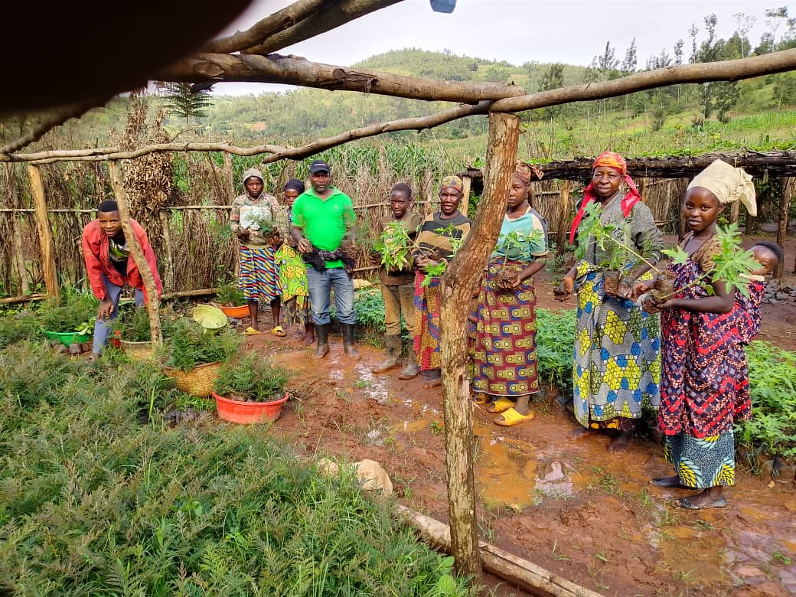

Our Team
Our Staff & Board
Meet the dedicated team behind Green for Life Rwanda — experienced professionals working to conserve the environment and empower communities across Rwanda.
Our Team
The People Behind Our Work
Green for Life Rwanda is driven by a committed team of professionals with deep experience in rural development, agroforestry, environmental conservation, finance, and community empowerment. Together, we work to make lasting environmental and social change across Rwanda.

Founded 2017
Staff Profiles
Our Team
Staff profiles will be updated soon.
Work With Us
Join Our Team
Green for Life Rwanda is always looking for passionate individuals who share our commitment to environmental conservation and community empowerment. If you are interested in volunteering, internships, or future employment opportunities, we would love to hear from you.